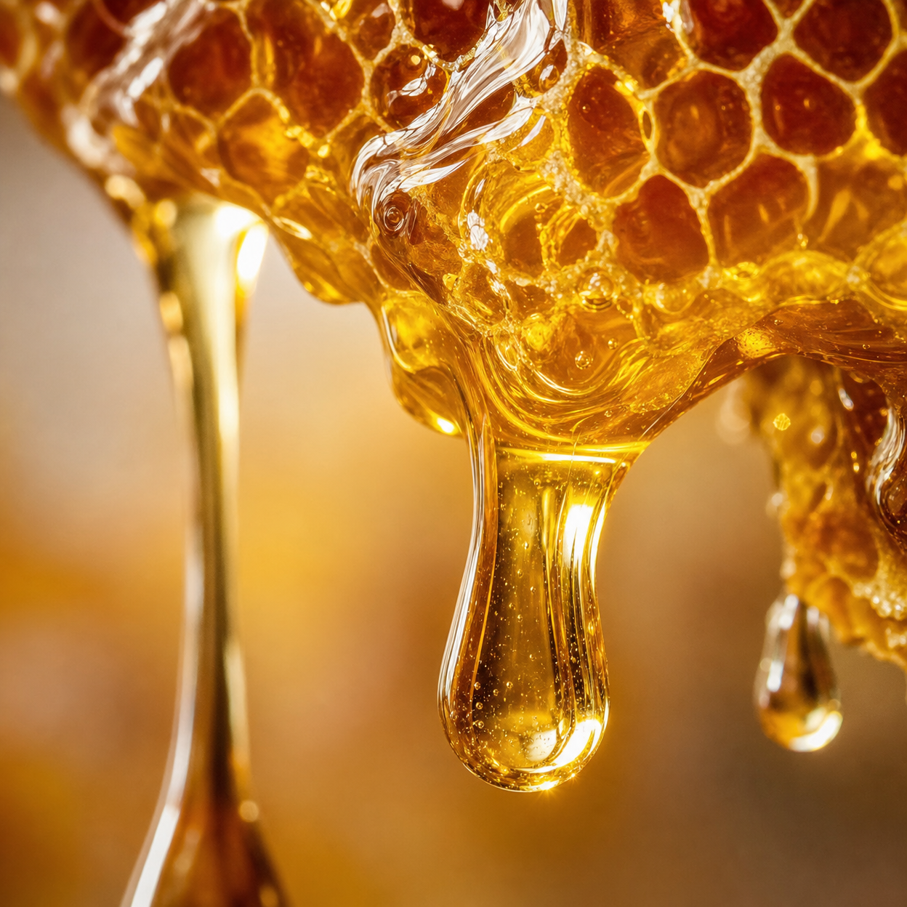

V posledných týždňoch sa v komunitách zameraných na dlhovekosť a vitalitu objavuje fascinujúca téma. Nejde o žiadny prevratný liek z laboratória, ale o precízne využitie prírodného procesu, ktorý naši predkovia uctievali ako "zlatý mechanizmus".
Tento mechanizmus je založený na špecifickej interakcii čistých prírodných zložiek s naším vnútorným systémom. Pomáha telu znovu nájsť rovnováhu a podporuje mentálnu sviežosť, ktorú mnohí považovali za nenávratne stratenú s pribúdajúcim vekom.
Mnoho ľudí po celom Slovensku, najmä vo vekovej skupine nad 60 rokov, hlási pozoruhodné zmeny vo svojej každodennej energii. Tento jednoduchý rituál, ktorý trvá len niekoľko okamihov, sa stáva kľúčom k novému pocitu vitality.
Zistiť viac o tomto mechanizmeVedecké pozorovania naznačujú, že tento tradičný prístup pracuje v súlade s prirodzenými biorytmami tela. Je to jemná, ale účinná cesta, ako podporiť svoje zdravie bez zbytočnej chémie.

Pokiaľ vás zaujíma, ako tento mechanizmus funguje a ako ho môžete zaradiť do svojho života, pripravili sme pre vás bezplatnú video prezentáciu, ktorá odhaľuje všetky tajomstvá.
Sledovať video prezentáciu zdarma